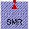

ThermalAmbientSMRThermal ambient for synchronous machine with reluctance rotor |

|
Diagram
{kind=link}
Information
This information is part of the Modelica Standard Library maintained by the Modelica Association.
Thermal ambient for synchronous machines with reluctance rotor to prescribe winding temperatures either constant or via signal connectors. Additionally, all losses = heat flows are recorded.Parameters (5)
| m |
Value: 3 Type: Integer Description: Number of stator phases |
|---|---|
| useTemperatureInputs |
Value: false Type: Boolean Description: If true, temperature inputs are used; else, temperatures are constant |
| Ts |
Value: Type: Temperature (K) Description: Temperature of stator windings |
| useDamperCage |
Value: Type: Boolean Description: Enable / disable damper cage |
| Tr |
Value: Type: Temperature (K) Description: Temperature of damper cage (optional) |
Outputs (7)
| Q_flowStatorWinding |
Default Value: temperatureStatorWinding.port.Q_flow Type: HeatFlowRate (W) Description: Heat flow rate of stator windings |
|---|---|
| Q_flowStatorCore |
Default Value: temperatureStatorCore.port.Q_flow Type: HeatFlowRate (W) Description: Heat flow rate of stator core losses |
| Q_flowRotorCore |
Default Value: temperatureRotorCore.port.Q_flow Type: HeatFlowRate (W) Description: Heat flow rate of stator core losses |
| Q_flowStrayLoad |
Default Value: temperatureStrayLoad.port.Q_flow Type: HeatFlowRate (W) Description: Heat flow rate of stray load losses |
| Q_flowFriction |
Default Value: temperatureFriction.port.Q_flow Type: HeatFlowRate (W) Description: Heat flow rate of friction losses |
| Q_flowRotorWinding |
Default Value: temperatureRotorWinding.port.Q_flow Type: HeatFlowRate (W) Description: Heat flow rate of damper cage (optional)) |
| Q_flowTotal |
Default Value: Q_flowStatorWinding + Q_flowRotorWinding + Q_flowStatorCore + Q_flowRotorCore + Q_flowStrayLoad + Q_flowFriction Type: HeatFlowRate (W) |
Connectors (3)
| thermalPort |
Type: ThermalPortSMR |
|
|---|---|---|
| TStatorWinding |
Type: RealInput Description: Temperature of stator windings |
|
| TRotorWinding |
Type: RealInput Description: Temperature of damper cage (optional) |
Components (9)
| temperatureStatorWinding |
Type: PrescribedTemperature |
|
|---|---|---|
| temperatureStatorCore |
Type: FixedTemperature |
|
| temperatureRotorCore |
Type: FixedTemperature |
|
| temperatureStrayLoad |
Type: FixedTemperature |
|
| temperatureFriction |
Type: FixedTemperature |
|
| constTs |
Type: Constant |
|
| thermalCollectorStator |
Type: ThermalCollector |
|
| temperatureRotorWinding |
Type: PrescribedTemperature |
|
| constTr |
Type: Constant |